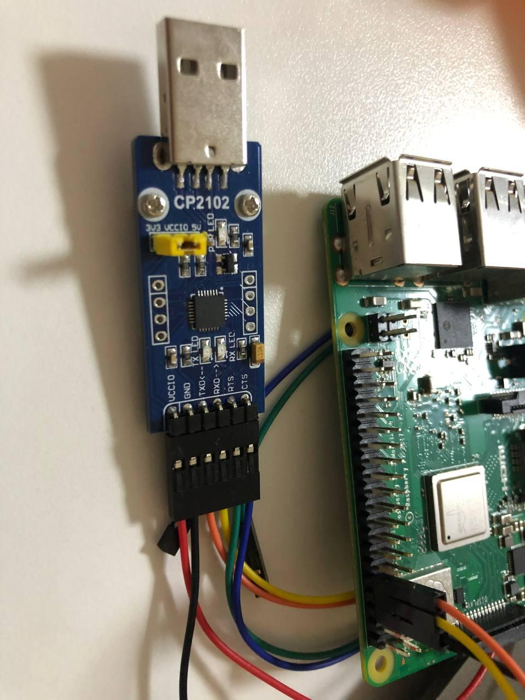

在树莓派上运行 Linux 内核和 init (选做)¶
硬件设备要求¶
- 一台计算机；
- 一个 Raspberry Pi 3 Model B+ （含电源）；
- 一张 2G 以上的 microSD 卡；
- 一个 microSD 读卡器；
- HDMI 线和屏幕
- CP2102 USB 转串口模块
由于需求额外硬件，在树莓派实体机上运行为选做，欢迎感兴趣的同学积极尝试。如果选做此项请在实验报告中说明，批改时评测环境将变为树莓派实体机 (如果在实体机上和预期表现不符会再用 QEMU 评测). 虽然相比 QEMU 没有额外加分, 但是助教们会给你鼓掌掌.
注意事项¶
由于树莓派调试相对 QEMU 更为烦琐, 推荐配合使用 QEMU 和树莓派. 需要注意串口相关的区别, 建议阅读树莓派官方对于串口的说明. 通过 GPIO 连接的是 mini UART, 对应设备 /dev/ttyS0 .
流程¶
- SD 卡上创建一个 fat32 分区, 并挂载
- 将
boot_utils里的内容, 复制到挂载的分区内 - 将自己编译的 kernel 和 打包的 initrd 复制进挂载的分区内, 并命名为
kernel8.img和initrd.cpio.gz umount该分区, 再取出 SD卡- SD 卡放入树莓派, 连接显示器和串口模块, 打开串口终端 (如 Putty), 再接通电源.
- 观察显示器和串口终端上的输出.
config.txt 内容说明¶
tools/boot_utils/config.txt 内容:
arm_64bit=1 #启动 64-bit 内核, 默认 kernel=kernel8.img
initramfs initrd.cpio.gz followkernel #设置 initrd 文件名, 设置加载地址为 followkernel
enable_uart=1 #开启 mini UART
串口¶
串口配置¶
想要看到正确的串口输出, 需要:
-
bootcode.bin中设置BOOT_UART=1sed -i -e "s/BOOT_UART=0/BOOT_UART=1/" bootcode.bin -
config.txt中设置enable_uart=1
以上在提供的 boot_utils 中已经配置好.
串口连线¶

串口客户端¶
以 Putty 为例:
Speed 设为 115200, Serial line 设为 /dev/ttyUSB0, Connection type 为 Serial, 然后点击 open.